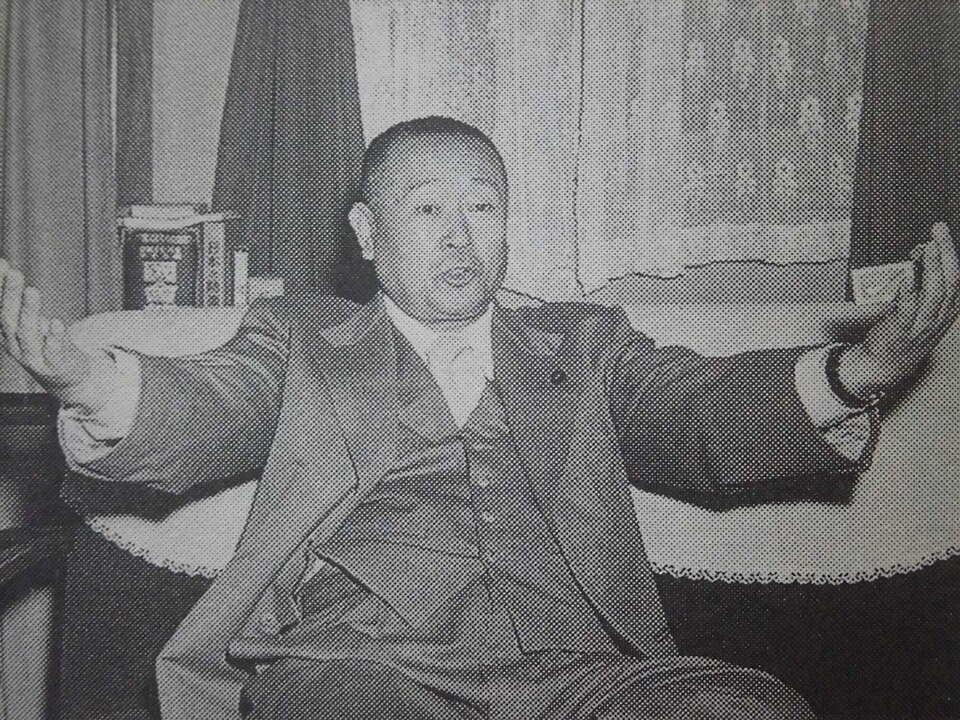
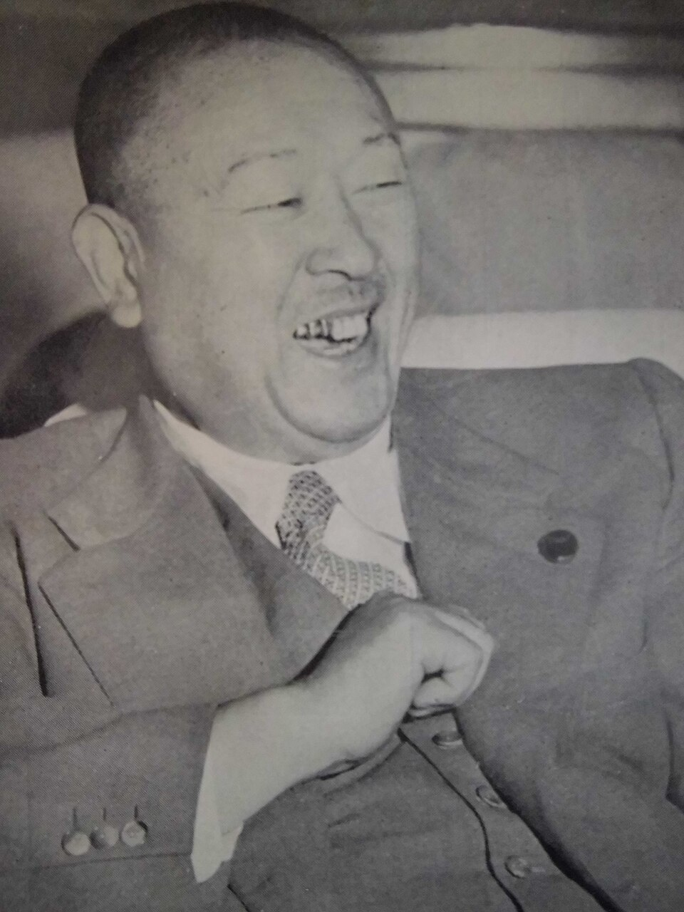
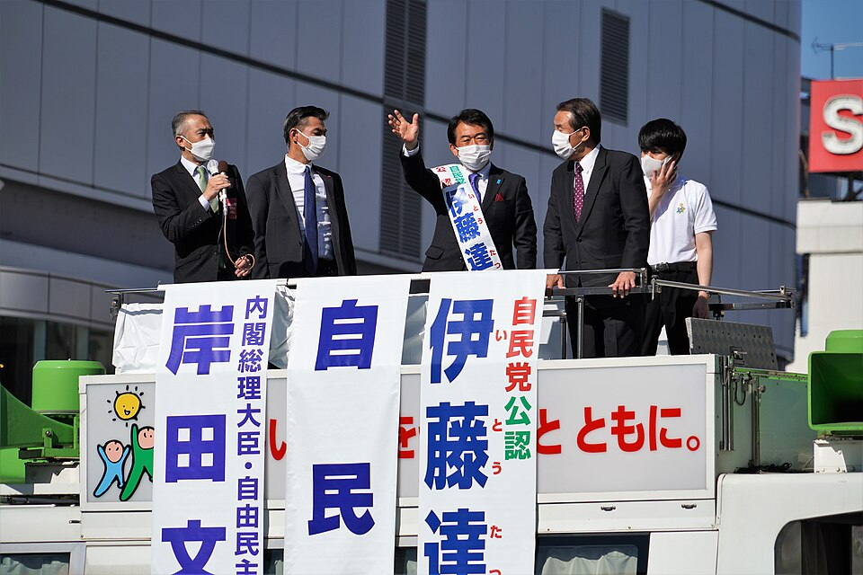

堤義明
つつみ・よしあき
コクド取締役会長・西武グループ実力者
役割：虚偽記載と公表前売却を認識・主導したとされ、刑事責任を問われた
その後：懲役2年6月・執行猶予4年・罰金500万円、確定7
1957年〜2014年
西武鉄道は、コクド等が実質保有していた個人名義株を有価証券報告書に反映せず、実質保有比率約65％を約43％と記載していた。1
総会屋への利益供与事件の調査を契機に管理株の問題が公表され、東京証券取引所は虚偽記載と投資者保護を理由に西武鉄道株を上場廃止とした。2
堤義明、西武鉄道、コクドは虚偽有価証券報告書提出・内部者取引をめぐって刑事責任を問われ。株主訴訟では公表後の株価急落を含む損害の算定が争われた。3

西武グループでは、創業者の堤康次郎の死後、堤義明が鉄道・ホテルを中心とする事業群を担い。異母兄の堤清二が百貨店・流通を中心とする事業群を担ったと説明されている。これは事件の刑事認定そのものではなく、株式管理とグループ支配の背景である。西武鉄道は2004年11月の開示で、1964年以前から堤康次郎事務所が株券を一括管理していたことを説明した。コクドやプリンスホテルは会社名義株のほか、個人名義で西武鉄道株を管理し、実質的に所有していた。形成時期は半世紀前に遡り、当時の資料が完全でないため、会社自身も詳細不明部分が残るとした。14
先般、平成１６年１０月１３日に公表させていただきましたとおり、当社発行株式につき、株式会社コクド（以下「コクド」という）および株式会社プリンスホテル（以下「プリンスホテル」という）が、これらの企業名義で所有している当社の株式のほかに、個人名義で当社の株式を管理し、実質的に所有していることが既に判明しております（以下、こうした株式を「コクド管理株」といいます） 当該株式につきまして、現経営陣においても、社内で古い資料を発掘する、当時の関係者に事情聴取するなどして、更に事実関係を調査した結果、その発生の原因・経緯等につきまして下記のとおり、一定程度は解明しましたので、公表いたします。 ただ、当該株式が発生した当時の責任者の多くは既に他界されており、また、当該株式が発生したと推測される時期が半世紀前に遡ることから、当時の関係書類も必ずしも完全ではなく、調査を尽くしましてもその詳細が判明していない部分もありますことを、ここで予めお断り申し上げます。
意味：会社自身が、個人名義株をコクド等が実質所有していたと認めつつ、形成過程の全容解明には限界があると説明している。
西武鉄道の有価証券報告書は、コクド名義で保有する株式だけを記載し、個人名義株を含めた実質保有株数を反映しなかった。コクド名義株と他人名義株を合わせれば、コクドは発行済株式総数の過半数を持つ状態だった。対象は昭和32年3月期から平成16年3月期までで、約47年に及ぶ。1990年の制度改正後はコクドも大量保有報告書の対象となったが、そこでも保有株数が過少に示されたとされる。1995年以降の売却や2000年以降の相対取引では、名義株を減少させる処理が行われたとJPX資料に整理されている。2
平成17年3月23日、犯則嫌疑法人２社、及び犯則嫌疑者について公訴の提起が行われ、同年10月27日、東京地裁は、以下の通り判決を言い渡し、同判決は確定した。 ○犯則嫌疑者に対し 懲役2年6ヶ月（執行猶予4年）、罰金500万円 ※虚偽有価証券報告書提出及び内部者取引について一括審理 ○犯則嫌疑法人西武鉄道㈱に対し 罰金2億円 ○犯則嫌疑法人㈱コクドに対し 罰金１億５，０００万円
意味：個人や提出会社と実質親会社について、虚偽記載と内部者取引を一括して刑事責任に結び付けた結果が確認できる。
2004年3月1日、西武鉄道役員・社員ら6人と総会屋側3人が逮捕された。西武鉄道は株主総会の円滑な運営への協力を得る目的で、総会屋側と関係する企業に土地を安く売却し、約8,800万円の差益を得させた疑いを持たれた。3月19日に起訴され、会社は3月22日に社内処分を公表した。4月8日には戸田博之が社長から取締役となり、小柳皓正が社長に就任した。会社は調査・検討委員会を設置し、企業倫理と株式事務を点検する過程で、会社名義以外の管理株を把握した。35
現在まで残された資料や、既に退職された方々からの聞き取り等によれば、昭和３０年代から４０年代頃まで、当社の株式担当の者や管理担当役員がこうしたコクド管理株の存在について全く知らなかった訳ではないように思われます。少なくとも、その当時の当社とコクドとの間の関係は、近年の両社の関係に比べれば、遥かに緊密であり、人事交流も存在していた模様であり、当社内部でも極めて少数の人は、この株式の存在を知っていたと考える方が自然に思われます。 その後も、当社内部で、ごく一部の者や株式担当者は、こうした特殊な株式の存在を認識しており、その実質的な所有者は、コクドではないかと理解していた模様です。コクドとの関係が深い当時の役員から、こうしたコクド管理株については、全て、コクドの意向及び先例に従って対応するようにと株式担当者に指示をし、それが担当者間で前任者から引継がれていたため、このことをあえて問題とせずに取り扱ってきた模様です。
意味：名義株の存在を誰も知らなかったのではなく、社内の一部が認識し、コクド側の意向・先例に従って処理していたという会社開示である。
2004年10月13日、西武鉄道は訂正報告書を提出し、コクドの位置付けを「その他の関係会社」から「親会社」に訂正した。東証は同日、監理ポストに割り当て、少数特定者持株数基準、財務諸表等虚偽記載基準。公益等保護基準への該当可能性を調査した。終値は同日1,081円、翌14日881円、10月21日511円となった。11月16日、東証は12月17日付の上場廃止を決定し、同日の終値は268円だった。12月16日の最終取引日は485円で、翌17日に上場廃止となった。26
加えまして、西武鉄道における株式事務は、議決権や配当など株主の権利にかかわる事務処理について不適当な行為を継続してきております。また、所有の態様に疑義のある多数の株式の存在を発見してからこれまでの間の対処についても、開示の遅滞あるいは開示前におけるコクドによる株式の売却への関与、こうした状況が見られるなど、投資者の信頼を裏切るともいうべき問題が認められました。 こうしたことから、私どもでは、西武鉄道は株券上場廃止基準に規定する虚偽記載を行い、かつ、その影響が重大であると認める場合、及び、その他公益または投資者保護のため上場廃止を適当と認めた場合、こうした規定に該当するものとして西武鉄道の上場廃止を決定したものでございます。
意味：東証は、虚偽記載だけでなく開示遅滞や公表前売却への関与を含む一連の対応を、投資者の信頼を裏切る問題として説明している。
証券取引等監視委員会は2005年3月22日、堤義明と西武鉄道を虚偽有価証券報告書提出で、コクドと堤義明を内部者取引で告発した。資料では、堤が2004年5月ころに継続的な虚偽記載を知り、公表前の9月にコクド従業員らと共謀して西武鉄道株を売却したとされる。3月23日に起訴され、10月27日、東京地裁は堤に懲役2年6月・執行猶予4年・罰金500万円、西武鉄道に罰金2億円。コクドに罰金1億5,000万円を言い渡した。SESC資料は判決が確定したとしている。7
証券監視委は、西武鉄道㈱の株券に係る内部者取引が証券取引法に違反するとして、平成17年3月22日、㈱コクド（犯則嫌疑法人）及び㈱コクドの取締役会長（当時）（犯則嫌疑者）を、東京地検検察官に告発した。 （事案の概要） 犯則嫌疑者は、平成16年5月ころ、その職務に関し、西武鉄道㈱の有価証券報告書に継続的に㈱コクドの所有に係る西武鉄道㈱株式数等について、虚偽の記載をしてきた事実を知り、その公表前に、その株式を売却してその株式数等について減少させようと企て、同年9月、㈱コクドの従業員らと共謀のうえ、同社の業務等に関し、他社に対し、同社が所有する株式を売り付けた。
意味：虚偽記載の認識後、公表前に株式を売却したという、情報の隠蔽と内部者取引の接続が示される。
2006年2月、コクドはプリンスホテルに統合された。西武グループ再編では、西武鉄道株主に1株につき西武ホールディングス株1株が割り当てられ、西武鉄道株は1株919円で評価された。民事では2005〜2007年に計15件、請求元金総額417億円余の損害賠償請求訴訟が提起された。2011年9月13日、最高裁は、虚偽記載が公表された後のろうばい売りによる過剰な下落も、虚偽記載との相当因果関係を否定できない場合があると整理し。複数事件を破棄差戻しとした。78
東京証券取引所が，平成１６年１１月１６日，株券上場廃止基準２条１項１１号ａ（上場会社が財務諸表等又は中間財務諸表等に虚偽記載を行い，かつ，その影響が重大であると認めた場合）及び同項１６号（公益又は投資者保護のため，当該銘柄の上場廃止を適当と認めた場合）に該当するとして西武鉄道株式の上場廃止決定をしたのは，以下の理由からであったことが認められる。すなわち，被告西武鉄道においては，コクドが実質的に所有する名義株が昭和３２年ころから継続して存在し，その数量が株券上場廃止基準としての少数特定者持株数基準に抵触する水準に及んでおり，東京証券取引所は，こうした事態が被告西武鉄道の内部管理態勢等組織的な問題に起因して発生したことを考慮し，西武鉄道株式を上場廃止とした。 上記事実に照らすと，西武鉄道株式の上場廃止の原因となった事実は，原告らが西武鉄道株式を取得した時点においても既に存在していたということができる。
意味：裁判所は、名義株問題を一時的な開示ミスではなく、長期継続した内部管理・組織上の問題として位置付けている。
2008年4月24日の東京地裁判決は、コクドが実質所有する名義株が昭和32年ころから継続し、少数特定者持株数基準に抵触する水準に達したことを認定した。判決は、上場廃止の原因が西武鉄道の内部管理態勢など組織的な問題に起因したと整理した。事件後の制度・慣行として、代表者による有価証券報告書等の記載内容確認書制度、親会社等状況報告書制度。内部統制報告制度や課徴金制度につながったとする研究資料がある。ただし、親会社等状況報告書制度などとの直接の立法上の因果関係は本調査で未確認である。西武グループはコンプライアンス・マニュアル、企業倫理ホットライン、企業倫理委員会を整備した。91011
この事件では、名義人と実質所有者の関係、報告書を作成した会社、株式事務を担当した役員。親会社側で売却を決めた者の認識時期が別々に問題となった。西武鉄道の開示は、社内のごく一部が管理株の存在を認識し、コクドとの関係が深い役員から先例に従うよう指示されたと説明している。一方、当時の責任者の多くが既に他界し、関係書類も不完全だったため。会社は形成過程の全てを断定していない。2004年10月の訂正報告書は、単一年度の数値修正にとどまらず、親会社の表示、株式事務、少数特定者持株数。投資者への情報提供を一体として問題化した。東証は、虚偽記載の影響が重大であることに加え、公益または投資者保護のため上場廃止が適当と判断した。12
| 西武鉄道本社 | 埼玉県所沢市くすのき台1-11-1 | 虚偽記載の提出会社 | 16 |
| コクド旧本社所在地 | 東京都渋谷区 | 実質支配株主・名義株管理主体 | 2 |
| 東京証券取引所 | 東京都中央区日本橋兜町2-1 | 監理ポスト・上場廃止決定 | 17 |
| 東京地方裁判所 | 東京都千代田区霞が関1-1-4 | 刑事判決、民事訴訟 | 18 |
| 金融庁 | 東京都千代田区霞が関3-2-1 | 金融行政・会見 | 19 |
| 証券取引等監視委員会 | 東京都千代田区霞が関3-2-1 | 調査・告発 | 20 |
| 東京地方検察庁 | 東京都千代田区霞が関1-1-4 | 起訴 | 21 |
| 西武池袋本店 | 東京都豊島区南池袋1-28-1 | 堤清二・セゾン側の象徴的拠点 | 22 |
西武鉄道株は会社名義だけでなく個人名義で管理され、報告書では他人名義株が除外された。公表前売却と総会屋関係企業への土地取引は別の接点だが、いずれも株式事務・開示・経営責任の検証過程で問題となった。25
つつみ・よしあき
コクド取締役会長・西武グループ実力者
役割：虚偽記載と公表前売却を認識・主導したとされ、刑事責任を問われた
その後：懲役2年6月・執行猶予4年・罰金500万円、確定7

つつみ・やすじろう
西武グループ創業者
役割：1964年以前に西武鉄道株券を事務所で管理していた時期の人物
その後：1964年以前に死亡。事件での刑事責任は未確認1
つつみ・せいじ
西武百貨店・セゾングループ経営者
こやなぎ・こうせい
2004年4月以降の西武鉄道社長
とだ・ひろゆき
2004年3月まで西武鉄道社長
役割：総会屋利益供与事件の経営責任で社長職を退いた
その後：その後の処分・現在は未確認3
いくら・せいいち
西武鉄道取締役
役割：総会屋事件に関する経営責任で辞任
その後：その後は未確認3
かんの・とくひろ
西武鉄道取締役
役割：総会屋事件に関する経営責任で辞任
その後：その後は未確認3
こじま・まさる
西武鉄道取締役
役割：総会屋事件に関する経営責任で辞任
その後：その後は未確認3
もり・けんじ
西武鉄道取締役総務部長
役割：2004年11月開示の問い合わせ先
その後：その後は未確認6

いとう・たつや
金融担当大臣
役割：虚偽記載・内部者取引について会見で答弁
その後：事件の刑事当事者ではない23
ごみ・ひろふみ
金融庁長官
役割：2004年11月の会見で投資家保護等を説明
その後：事件の刑事当事者ではない13
つるしま・たくお
東京証券取引所社長
役割：上場廃止の理由を国会で説明
その後：事件の刑事当事者ではない24
株式管理をめぐる親子・兄弟関係、会社役員と総会屋側の利益供与、告発・上場廃止・株主訴訟の関係を分けて示す。闇の人脈に該当する接点は underworld として表示する。
姻戚・血縁／対立・確執。両者は堤康次郎を父とする異母兄弟で、義明は鉄道・ホテル、清二は百貨店・流通を中心に別々の事業群を担った。清二と義明の確執は大手報道・書籍紹介で扱われているが、虚偽記載への共同関与は未確認。425
親子／庇護・口利き。康次郎の事務所が1964年以前に西武鉄道株券を一括管理していたと西武鉄道が開示している。1
親子／対立・確執。清二は康次郎の子で、康次郎死後に義明とは異なる流通事業を担った。相続・事業承継の詳細は当事者資料と報道の範囲で、判決認定ではない。22
上司と部下。SESCは堤がコクド従業員と共謀して公表前に株式を売却したと告発した。個々の従業員名は本報告では掲載しない。7
上司と部下／資金の出し手と受け手。SESCは、堤が西武鉄道代表取締役社長らと共謀し、約65％を約43％とする有価証券報告書を提出したとした。7
上司と部下。2004年4月8日、戸田が代表取締役社長から取締役となり、小柳が専務から社長に就任した。3
資金の出し手と受け手／庇護・口利き。株主総会の円滑な運営への協力を得る目的で、土地売却による利益を総会屋側に与えたとされた。5
上司と部下／告発・調査。総会屋事件後、会社は調査・検討委員会を設け、再発防止と企業倫理の再徹底を掲げた。11
対立・確執。東証は虚偽記載基準・公益等保護基準を適用し、上場廃止を決めた。2
告発・調査。SESCは虚偽有価証券報告書提出及び内部者取引で堤を告発した。7
告発・告訴。SESC告発を受け、堤・西武鉄道・コクドを2005年3月23日に起訴した。7
対立・確執。株主は虚偽記載による損害賠償を請求し、2005〜2007年に計15件の訴訟が提起された。7
対立・確執。2011年、虚偽記載公表後の過剰な株価下落も因果関係の範囲に入り得ると判断し、事件を差し戻した。8
上司と部下。小柳は虚偽記載公表前の西武鉄道社長であり、判決資料では代表取締役の責任時期が問題となった。個人的な確執・庇護関係は未確認。2
金銭授受。土地売買差益約8,800万円が総会屋側の利益となったとされる。5
証券監視委は、西武鉄道㈱に係る虚偽の有価証券報告書の提出が証券取引法に違反するとして、平成17年3月22日、㈱コクドの取締役会長（当時）（犯則嫌疑者）及び西武鉄道㈱（犯則嫌疑法人）を、東京地検検察官に告発した。 （事案の概要） 犯則嫌疑者は、犯則嫌疑法人の代表取締役社長らと共謀の上、同社の業務に関し、平成16年6月、関東財務局長に対し、㈱コクドの所有に係る同西武鉄道㈱株式数につき、発行済株式総数に対する所有割合が約65％であるにもかかわらず、その所有割合を約43％などとする重要な事項について虚偽の記載のある有価証券報告書を提出した。
意味：監視委員会は、単なる計算違いではなく、経営者と会社側の「共謀」による実質保有比率の虚偽記載として告発している。
公的資料と調査メモで確認できる中心は総会屋側・関係企業への土地取引である。暴力団、仕手筋、海外口座・タックスヘイブンの直接関与は公的資料で確認できない。報道・指摘は断定せず、資料の水準を明記する。
総会屋側・西武鉄道役員 指摘
総会屋側・西武鉄道関係者 報道
総会屋側 認定
西武鉄道子会社・関係企業 指摘
暴力団組織 確認できない
仕手筋 確認できない
堤義明・西武グループと政治団体 報道
海外法人・海外口座 確認できない
小柳皓正 確認できない
○岩國委員 こうした西武鉄道の株価形成あるいはこうした変則的な株主構成が税務の方にどういうインパクトを与えたか。結果としてこれは脱税につながっている、少なくとも巨額の節税につながっているという推理が成り立ちます。財務省としても十分調査されたかどうか。例えば、堤康次郎氏はどれだけの税金を払っておられたのか。また、受取配当に対して、その税金はだれが払っておったのか。実質的な所有者が払っておったのか、形式的な所有者が払ったことになっているのか。そういう、贈与税はどうなったのか、あるいは相続税はだれが払ったのか。こういう架空名義、名義貸しの株式についての配当の課税関係、それから贈与、相続の課税関係、これを堤康次郎氏と堤義明氏、それから日本テレビについて渡辺恒雄氏、この三氏についての調査をされたかどうか、お答えください。 ○谷垣国務大臣 個々の課税関係、個別にわたる事柄についてはお答えをしないということで今までも来ておりますし、この件についてもそのようにお答えをさせていただきたいと思っておりますが、全く一般論でございますけれども、私どもは必要な情報が、あればというのはちょっとあれでございますが、必要な情報をきちっと集めて適切に対処している、こうお答えいたします。
意味：国会では、名義株が税務・相続・配当の実質帰属にも関わる疑念として追及されたが、大臣は個別案件への回答を避けた。
| コクド・堤義明 | 0確認不能 | 0確認不能 | 実質支配と上場維持の利益があったと考えられるが、個別金額は未確認 | 7 |
| 西武鉄道 | 0億円 | 2億円 | 罰金2億円と上場廃止 | 7 |
| コクド | 0億円 | 1.5億円 | 罰金1億5,000万円と吸収合併 | 7 |
| 株主 | 0億円超 | 417億円超 | 計15件の損害賠償請求と株価下落 | 7 |
| 総会屋側 | 0.88億円 | 0億円 | 土地取引差益約8,800万円とされる | 5 |
| 債権者・取引先・従業員 | 0確認不能 | 0確認不能 | 信用・流動性・再編の影響。個別損失額は未確認 | 2 |
| 東京地裁 | 2005-10-27 | 懲役2年6月・執行猶予4年・罰金500万円 |
旧証券取引法違反。虚偽有価証券報告書提出及び内部者取引。確定7
| 東京地裁 | 2005-10-27 | 罰金2億円 |
虚偽有価証券報告書提出。確定7
| 東京地裁 | 2005-10-27 | 罰金1億5,000万円 |
内部者取引。確定7
| 最高裁 | 2011-09-13 | 原判決を破棄差戻し |
株主による虚偽記載損害賠償請求。最高裁は公表後のろうばい売りを含み得る損害算定を示した。判決内容を調査メモの範囲で記載8
| 東京証券取引所 | 2004-12-17 | 上場廃止 |
虚偽記載・公益等保護基準。実施2
証券監視委は、西武鉄道㈱に係る虚偽の有価証券報告書の提出が証券取引法に違反するとして、平成17年3月22日、㈱コクドの取締役会長（当時）（犯則嫌疑者）及び西武鉄道㈱（犯則嫌疑法人）を、東京地検検察官に告発した。 （事案の概要） 犯則嫌疑者は、犯則嫌疑法人の代表取締役社長らと共謀の上、同社の業務に関し、平成16年6月、関東財務局長に対し、㈱コクドの所有に係る同西武鉄道㈱株式数につき、発行済株式総数に対する所有割合が約65％であるにもかかわらず、その所有割合を約43％などとする重要な事項について虚偽の記載のある有価証券報告書を提出した。
意味：監視委員会は、単なる計算違いではなく、経営者と会社側の「共謀」による実質保有比率の虚偽記載として告発している。
証券監視委は、西武鉄道㈱の株券に係る内部者取引が証券取引法に違反するとして、平成17年3月22日、㈱コクド（犯則嫌疑法人）及び㈱コクドの取締役会長（当時）（犯則嫌疑者）を、東京地検検察官に告発した。 （事案の概要） 犯則嫌疑者は、平成16年5月ころ、その職務に関し、西武鉄道㈱の有価証券報告書に継続的に㈱コクドの所有に係る西武鉄道㈱株式数等について、虚偽の記載をしてきた事実を知り、その公表前に、その株式を売却してその株式数等について減少させようと企て、同年9月、㈱コクドの従業員らと共謀のうえ、同社の業務等に関し、他社に対し、同社が所有する株式を売り付けた。
意味：虚偽記載の認識後、公表前に株式を売却したという、情報の隠蔽と内部者取引の接続が示される。
平成17年3月23日、犯則嫌疑法人２社、及び犯則嫌疑者について公訴の提起が行われ、同年10月27日、東京地裁は、以下の通り判決を言い渡し、同判決は確定した。 ○犯則嫌疑者に対し 懲役2年6ヶ月（執行猶予4年）、罰金500万円 ※虚偽有価証券報告書提出及び内部者取引について一括審理 ○犯則嫌疑法人西武鉄道㈱に対し 罰金2億円 ○犯則嫌疑法人㈱コクドに対し 罰金１億５，０００万円
意味：個人や提出会社と実質親会社について、虚偽記載と内部者取引を一括して刑事責任に結び付けた結果が確認できる。
先般、平成１６年１０月１３日に公表させていただきましたとおり、当社発行株式につき、株式会社コクド（以下「コクド」という）および株式会社プリンスホテル（以下「プリンスホテル」という）が、これらの企業名義で所有している当社の株式のほかに、個人名義で当社の株式を管理し、実質的に所有していることが既に判明しております（以下、こうした株式を「コクド管理株」といいます） 当該株式につきまして、現経営陣においても、社内で古い資料を発掘する、当時の関係者に事情聴取するなどして、更に事実関係を調査した結果、その発生の原因・経緯等につきまして下記のとおり、一定程度は解明しましたので、公表いたします。 ただ、当該株式が発生した当時の責任者の多くは既に他界されており、また、当該株式が発生したと推測される時期が半世紀前に遡ることから、当時の関係書類も必ずしも完全ではなく、調査を尽くしましてもその詳細が判明していない部分もありますことを、ここで予めお断り申し上げます。
意味：会社自身が、個人名義株をコクド等が実質所有していたと認めつつ、形成過程の全容解明には限界があると説明している。
現在まで残された資料や、既に退職された方々からの聞き取り等によれば、昭和３０年代から４０年代頃まで、当社の株式担当の者や管理担当役員がこうしたコクド管理株の存在について全く知らなかった訳ではないように思われます。少なくとも、その当時の当社とコクドとの間の関係は、近年の両社の関係に比べれば、遥かに緊密であり、人事交流も存在していた模様であり、当社内部でも極めて少数の人は、この株式の存在を知っていたと考える方が自然に思われます。 その後も、当社内部で、ごく一部の者や株式担当者は、こうした特殊な株式の存在を認識しており、その実質的な所有者は、コクドではないかと理解していた模様です。コクドとの関係が深い当時の役員から、こうしたコクド管理株については、全て、コクドの意向及び先例に従って対応するようにと株式担当者に指示をし、それが担当者間で前任者から引継がれていたため、このことをあえて問題とせずに取り扱ってきた模様です。
意味：名義株の存在を誰も知らなかったのではなく、社内の一部が認識し、コクド側の意向・先例に従って処理していたという会社開示である。
○岩國委員 こうした西武鉄道の株価形成あるいはこうした変則的な株主構成が税務の方にどういうインパクトを与えたか。結果としてこれは脱税につながっている、少なくとも巨額の節税につながっているという推理が成り立ちます。財務省としても十分調査されたかどうか。例えば、堤康次郎氏はどれだけの税金を払っておられたのか。また、受取配当に対して、その税金はだれが払っておったのか。実質的な所有者が払っておったのか、形式的な所有者が払ったことになっているのか。そういう、贈与税はどうなったのか、あるいは相続税はだれが払ったのか。こういう架空名義、名義貸しの株式についての配当の課税関係、それから贈与、相続の課税関係、これを堤康次郎氏と堤義明氏、それから日本テレビについて渡辺恒雄氏、この三氏についての調査をされたかどうか、お答えください。 ○谷垣国務大臣 個々の課税関係、個別にわたる事柄についてはお答えをしないということで今までも来ておりますし、この件についてもそのようにお答えをさせていただきたいと思っておりますが、全く一般論でございますけれども、私どもは必要な情報が、あればというのはちょっとあれでございますが、必要な情報をきちっと集めて適切に対処している、こうお答えいたします。
意味：国会では、名義株が税務・相続・配当の実質帰属にも関わる疑念として追及されたが、大臣は個別案件への回答を避けた。
加えまして、西武鉄道における株式事務は、議決権や配当など株主の権利にかかわる事務処理について不適当な行為を継続してきております。また、所有の態様に疑義のある多数の株式の存在を発見してからこれまでの間の対処についても、開示の遅滞あるいは開示前におけるコクドによる株式の売却への関与、こうした状況が見られるなど、投資者の信頼を裏切るともいうべき問題が認められました。 こうしたことから、私どもでは、西武鉄道は株券上場廃止基準に規定する虚偽記載を行い、かつ、その影響が重大であると認める場合、及び、その他公益または投資者保護のため上場廃止を適当と認めた場合、こうした規定に該当するものとして西武鉄道の上場廃止を決定したものでございます。
意味：東証は、虚偽記載だけでなく開示遅滞や公表前売却への関与を含む一連の対応を、投資者の信頼を裏切る問題として説明している。
問） 西武鉄道の有価証券報告書の虚偽記載問題で、親会社のコクドが虚偽記載があるという事実を伏せた上で、取引先の企業に購入を持ちかけていたという問題が浮上しておりますが、この取引はインサイダー取引であるとか、独禁法で禁じられた優越的な地位利用の禁止に抵触するのではないかという疑いが持たれていますが、この件について大臣の御見解をお願いします。 答） 西武鉄道・コクドの問題については、有価証券報告書の虚偽記載やインサイダー取引に関する報道がなされていることは承知をいたしております。西武鉄道・コクド等は関東財務局に有価証券報告書の訂正報告書等を提出をいたしておりまして、個別事案に係る仔細についてのコメントはできないということはお許しいただきたいと思いますが、同財務局において訂正等の内容及び経緯等について必要に応じて確認を行うこととなります。また一般論でありますけれども、仮に有価証券報告書等の虚偽の記載や、或いはインサイダー取引に該当するという事実があると疑える場合には、証券取引等監視委員会が必要に応じて調査を行うことになります。
意味：発覚直後の金融担当相会見で、コクドによる購入勧誘と虚偽記載・内部者取引の関係が問われ、当局調査の可能性が示された。
東京証券取引所が，平成１６年１１月１６日，株券上場廃止基準２条１項１１号ａ（上場会社が財務諸表等又は中間財務諸表等に虚偽記載を行い，かつ，その影響が重大であると認めた場合）及び同項１６号（公益又は投資者保護のため，当該銘柄の上場廃止を適当と認めた場合）に該当するとして西武鉄道株式の上場廃止決定をしたのは，以下の理由からであったことが認められる。すなわち，被告西武鉄道においては，コクドが実質的に所有する名義株が昭和３２年ころから継続して存在し，その数量が株券上場廃止基準としての少数特定者持株数基準に抵触する水準に及んでおり，東京証券取引所は，こうした事態が被告西武鉄道の内部管理態勢等組織的な問題に起因して発生したことを考慮し，西武鉄道株式を上場廃止とした。 上記事実に照らすと，西武鉄道株式の上場廃止の原因となった事実は，原告らが西武鉄道株式を取得した時点においても既に存在していたということができる。
意味：裁判所は、名義株問題を一時的な開示ミスではなく、長期継続した内部管理・組織上の問題として位置付けている。
平成23年9月から平成24年1月にかけて 破棄差戻判決言渡5件 ・ 虚偽記載がなければ株式を取得することはなかったとみるべき場合、虚偽記載と相当因果関係のある損害の額は、投資者が、公表後、取引所市場において処分したときはその取得価額と処分価額との差額を、上記株式を保有し続けているときはその取得価額と事実審の口頭弁論終結時の市場価額（上場廃止されているときは非上場株式としての価値）との差額をそれぞれ基礎とし、経済情勢、市場動向、当該会社の業績等虚偽表示に起因しない市場価額の下落分を上記差額から控除して、これを算定すべきである。 ・ 当該虚偽記載が公表された後のいわゆるろうばい売りが集中することによる市場価額の過剰な下落による損害は、当該虚偽記載と相当因果関係がないとはいえない。 ・ 本件公表までの間の西武鉄道株の市場価額の下落については、一般的には、虚偽記載が公表されていない間には、虚偽記載が市場価額に影響を与えることは少なく、虚偽記載とは無関係な要因に基づくものであることが多いと考えられるものの、本件公表前にコクドが虚偽記載に係る他人名義株を売却するなどして本件虚偽記載が一部解消されていたというのであり、その頃本件虚偽記載に起因して西武鉄道株の市場価額が下落していた可能性がある。
意味：最高裁は、公表後のパニック売りによる過剰下落も、虚偽記載との相当因果関係を否定できない場合があると整理した。
上場会社代表者による有価証券報告書等の記載内容確認書制度が導入された。事件との制度的因果は研究資料による整理である。10
親会社等状況報告書制度が導入されたとする研究資料がある。立法資料による直接因果は未確認。5
内部統制報告制度と継続開示書類の虚偽記載に対する課徴金制度につながったとする研究資料がある。5
西武鉄道は従来の個人会計士による監査から中央青山監査法人への移行を検討した。6
西武グループはコンプライアンス・マニュアル、企業倫理ホットライン、企業倫理委員会を整備した。11
西武鉄道：管理株の発生時期は半世紀前に遡り、当時の資料が完全でないため、調査を尽くしても詳細不明部分があると説明した。1
東京地裁：名義株は昭和32年ころから継続し、上場廃止の原因は内部管理態勢等の組織的問題に起因したと判断した。9
株主側：虚偽記載公表後の株価急落と流動性喪失を損害として主張した。7
最高裁：経済情勢等による下落分を控除すべきだが、ろうばい売りによる過剰な下落も相当因果関係を否定できないと整理した。8
金融担当大臣会見での質問：コクドが虚偽記載を伏せて取引先企業に購入を持ちかけた取引について、内部者取引等の疑いが問われた。23
金融担当大臣：個別事案へのコメントは避けつつ、虚偽記載や内部者取引に該当する事実が疑われる場合はSESCが調査すると説明した。23